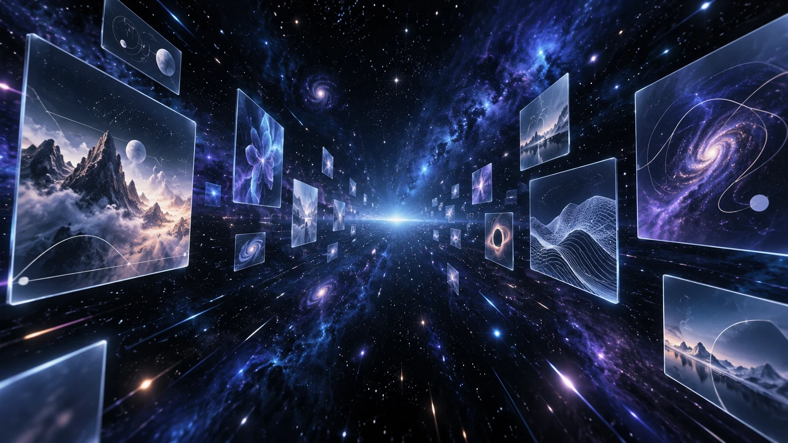
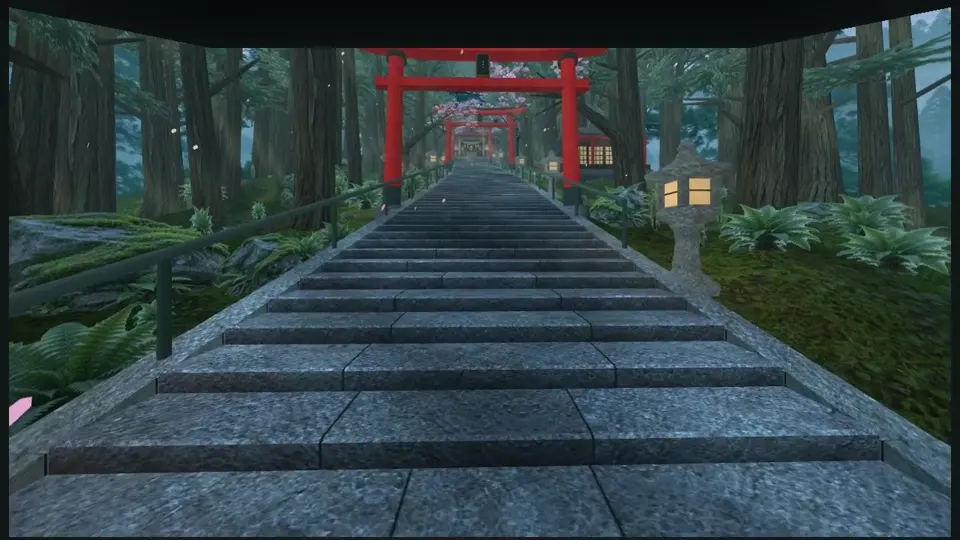

FILM ARCHIVE
作品展廊

ABOUT THE COLLECTION
關於創作
在正面牆上，石階通往林間的鳥居。轉向側牆，兩旁的杉木沿著步伐向後移動。低頭時，下一階已經來到腳邊。《杉影拾階》從這段路出發，嘗試讓整個房間都參與一次登山的經驗。
星間映廊收錄謝旻儕的沉浸式影像創作。展廊中的空間模擬保留牆角與地面的交界，全景作品則保留橫幅比例，讓觀者在一般螢幕上也能讀到原本的構圖。
謝旻儕台南應用科技大學 多媒體動畫系

FILM ARCHIVE

ABOUT THE COLLECTION
在正面牆上，石階通往林間的鳥居。轉向側牆，兩旁的杉木沿著步伐向後移動。低頭時，下一階已經來到腳邊。《杉影拾階》從這段路出發，嘗試讓整個房間都參與一次登山的經驗。
星間映廊收錄謝旻儕的沉浸式影像創作。展廊中的空間模擬保留牆角與地面的交界，全景作品則保留橫幅比例，讓觀者在一般螢幕上也能讀到原本的構圖。